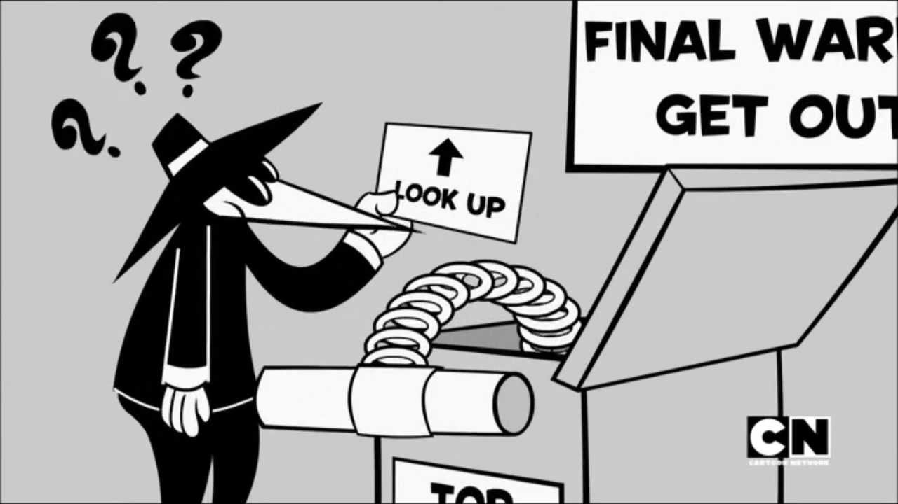
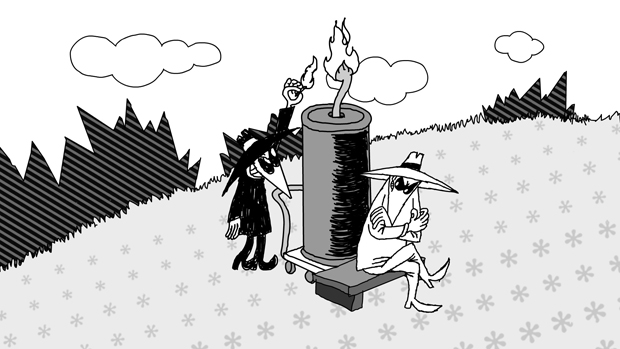

...Jasmine's version of a mock or test double function.
It is generally used to "mock" a function or other javascript object, so that you can track a function's implementation.

Use Cases
Mock an API call or API return data, so that you can control the API's return data, useful if you don’t want to directly call your API during test running.
Mock methods from third-party libraries (like jQuery), useful when testing browser functionality.

You Can Mock API data?
Sure! And who wouldn't want that?
// part of the Jasmine tests
var Spy = require('../jasmine-spies.js');
Spy.api_data = {
data : {
'George' : '006',
'Sue' : '008',
},
error : 'No knowledge of the existence of this one.',
Set up a new object, with a data property, in the "describe" block.
Setup
The "tested" function
// this is the actual code you are testing
// recognize this guy here?? Look ma, no data! :)
Spy.api_data = {};
Spy.call_api = function(spy_name) { // testing this
if(spy_name === '' ||
this.api_data.data[spy_name] === undefined) {
return this.api_data.error;
}
var spy_data = this.api_data.data[spy_name];
return spy_data;
Set up the function you are testing; ours is call_api().
Setup
Mock data in beforeEach()
// part of the Jasmine tests
beforeEach(function() {
var api_return, api_data, api_error, newSpy;
Spy.api_data = {
data : {
'George' : '006',
'Sue' : '008',
},
error : 'No knowledge of the existence of this one.',
Using the beforeEach() block allows the api_data and the Jasmine spy to be accessible before each test.
Setup
Create your spy
// part of the Jasmine tests
// this is the spy creation, we are spying
// on the actual call_api function implementation
spyOn(Spy, 'call_api');
This is where the magic happens!
Spying on our function allows us to track its implementation and usage, with special Jasmine Spy methods and matchers.
Setup
Using .and.callThrough()
// part of the Jasmine tests
// use callThrough(), so you can follow through
// the full code implemention on the code chain
Spy.call_api.and.callThrough();
WARNING: Use and.callThrough() to follow through on the function calls (i.e.: delegate to the actual implementation), otherwise your tests can FAIL!
Setup
Grab your "Spied On" returns
// part of the Jasmine tests
// this returns Sue's spy ID
api_return_sue = Spy.call_api('Sue');
// this call will return an error,
// since Fred doesn't exist in our data
api_return_fred = Spy.call_api('Fred');
Add the return data to variables, to use with matchers inside your tests.
Setup
Create Assertions with Matchers
// part of the Jasmine tests
it("tracks that it has been called", function() {
expect(Spy.call_api).toHaveBeenCalled();
});
This Jasmine Spy matcher checks to see if this function has been called at least one time. It might be nice to do this before testing your mocked API data, just to be sure!
Testing
Testing your "Mock" API data
it("when called, returns the requested value",
function() {
// recognize these variables?
expect(api_return_sue).toEqual('008');
expect(api_return_fred)
.toEqual('No knowledge of the existence of this one.');
});
After setting up our function, our API data, our tests, and our spy, we can use any Jasmine matchers to test our mock API data, like this matcher, toEqual().
Testing
Success! The tests passed!
Let's review!
[Setup] Set up the mock data.
[Setup] Set up the original function.
[Setup] Place the mock data in a beforeEach() block.
[Setup] Create your spy (in beforeEach()).
[Setup] Use and.callThrough() if needed (in beforeEach()).
[Setup] Put your "spied on" returns in variables (in beforeEach()).
var Spy = function() {};
// the actual api call would normally happen here
Spy.api_data = {};
// this is the function we are testing
Spy.call_api = function(spy_name){
if(spy_name === '' || this.api_data.data[spy_name] === undefined){
return this.api_data.error;
...